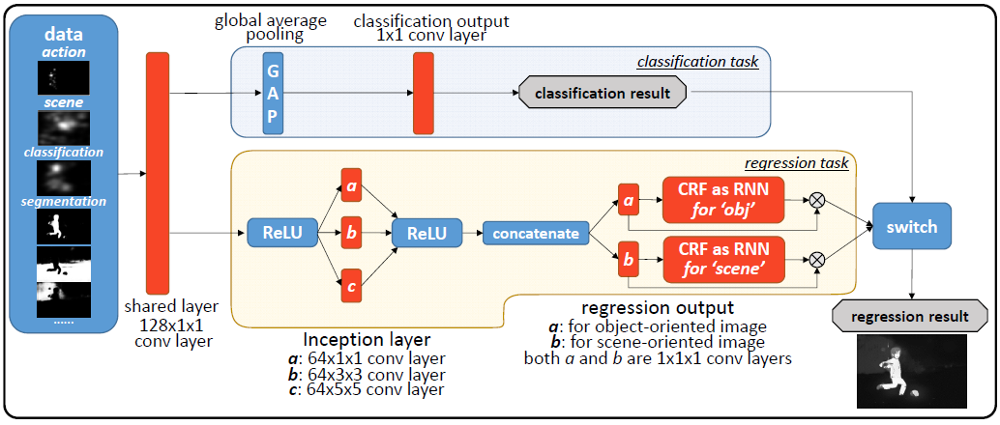
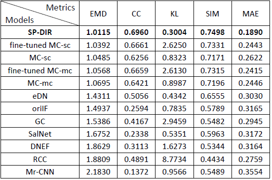

Image retargeting is applied to display any size of images via devices (e.g., cell phone, TV monitors) with possibly different resolutions. In order to fit the target resolution, certain less important pixels are distorted. Therefore, the key problem is to determine the importance of each pixel. All pixels’ importance scores form an importance map. Different from traditional methods which generate the importance map in a bottom-up manner such as estimating eye fixation, the proposed Semantic Preserving Deep Image Retargeting (SP-DIR) method generates the importance map based on a top-down criterion: the target image retains the semantic meaning embedded in the original image as much as possible. To this end, we first extract the semantic meaning conveyed in the original image using 5 state-of-the-art deep image understanding modules, including image, scene, action classification, object detection and image parsing. All the modules generate their own importance maps, where bigger values indicate more semantic meaning carried by the corresponding pixels. Extensive experiments are conducted on the benchmark RetargetMe (80 images) and our collected Semantic-Retarget dataset (1080 images). Results from the Amazon Mechanical Turk show the significant advantage of our DIR methods over the state-of-the-art image retargeting methods.
Figure 1 illustrates overall architecture of the proposed algorithm. Our model learns knowledge for semantic segmentation for images with weak-annotations (target domain) by leveraging strong annotations from different categories (source domain).
Figure 1. The framework of importance map fusion network.
balabalabalabala
Table 1. Quantified evaluation of importance map regression on the validation-set in S-Retarget dataset. 
| |
|
| [arxiv preprint] |
The code and trained model for the proposed method will be released soon.